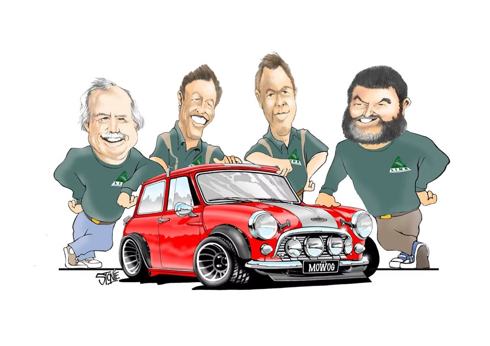

Servicing & repairs
Routine servicing, fault finding and mechanical repairs for classic Minis.
Unofficial website concept. No affiliation with or endorsement by Link Automotive.
Classic Mini specialists · Moorabbin
Mechanical restoration, performance tuning and servicing for classic Minis, from road cars to motorsport projects.
Workshop services
Bring your Mini in for everyday maintenance, plan a mechanical restoration or discuss a setup for the track.
Routine servicing, fault finding and mechanical repairs for classic Minis.
Work through the mechanical details of bringing a classic Mini back to the road.
Engine and suspension tuning, cylinder head modifications, and extractor design and fabrication.
Local and overseas Mini parts sourcing, plus setup and modification support for motorsport.
The Moorabbin workshop
From the first service on a newly acquired Mini to the next stage of a long-running build, bring your questions and plans to Link Automotive.
Find the workshop
Service & booking enquiries
Have your Mini’s model, year and a brief description of the work handy when you call.